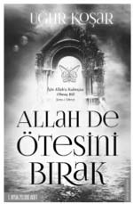

Allah her şeyden haberdardır, sanmayın ki size yapılan haksızlığa kayıtsız kalıyor. O, size bir annenin evladına yaklaştığı merhametten daha fazla merhamet duyandır. Duanın karşılığını takip etmeden “Allah de ötesini bırak”. Kul Rabb’ini imtihan etmez. O’na tevekkülle yaklaştığında rahmetini tüm hücrelerinde hissedeceksin.
Karşında o kadar çok maskeli insan var ki onları tanımak için yoruluyorsun. Şayet dikkat edersen güzel olan bir şey var; o senin hakkını aldıkça, sen onun sevaplarından kazanıyorsun. O halde kaybettim diye üzülme, biraz daha derin bakarsan, aslında kazandığını fark edeceksin!..
Aşık olcaksın evet ama kalbini Allah aşkıyla yakacaksın...
Dünyanın geçici olduğunu, biteceğini İDRAK edeceksin; sadece sonsuz kudrete bağlanacaksın.
ALLAH’A bağlı yaşayacaksın. İşte Uğur Koşar bu kitap da sana herkes gibi Allah’ı anlatmıyor O’nu adeta hissettirip yaşatıyor!..
Psikolog Cavidan Ebru Kızıl
Yirmi yıldır terapi deneyimlerimde elde ettiğim sonuçlardan biri şudur ki; eksik olan parçaları yitirdiğini düşünen ve bunları arayarak çıkmazlara giren ve bunun da dışarıda olduğunu sanan çok büyük bir çoğunluk çeşitli psikolojik sorunlarla ruh sağlıklarını bozmuştur. Bu büyük çoğunluğa eserlerinde ve görüşlerinde öze dönüş yolunda katkı sağlayan, aradıklarını bulabilme cesareti ve ışığı olan Uğur Koşar Dostuma “ALLAH DE ÖTESİNİ BIRAK” ile özlerine dönebilmesi adına ışık olan eserinden dolayı en içten teşekkürlerimi sunuyorum…
Uzm. Psikolog Abdullah Topal